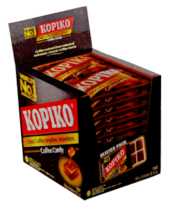
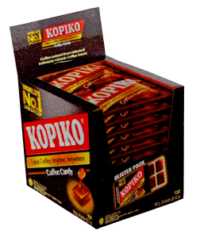

Your Pocket Coffee, Anytime Anywhere !
Kopiko Coffee Candy is the World’s #1 selling coffee candy, made from the finest coffee beans, specially blended to give you enjoyment of real coffee without having to brew. It’s like having a cup of coffee wherever you go.
Our bite sized, individually wrapped candies are available in regular Coffee and Cappuccino flavors. We have many packaging options for you to choose from contact us for more information or visit our site.

 

Real coffee candy made with the finest Java Coffee Beans for a rich taste sensation.
Kopiko Coffee candies are tantalizingly tasty sweets with the sublime flavor and rich aroma that only comes from real coffee beans grown on the island of Java. Java’s fertile, volcanic soil and tropical climate combine to create ideal conditions for growing the best coffee in the world. Quality is preserved by traditional farming methods and the finest beans are handpicked to ensure their freshness. These delicious beans are used to create Kopiko candy and there is no mistaking that real coffee taste. Kopiko Coffee candies are enjoyed in over 80 countries worldwide for a genuine coffee taste sensation anytime, anywhere.
Kopiko is the essence of the highest quality coffee. A single Kopiko candy contains real extract from real coffee beans. A real coffee pleasure anytime you want. Taste it, coffee inside!